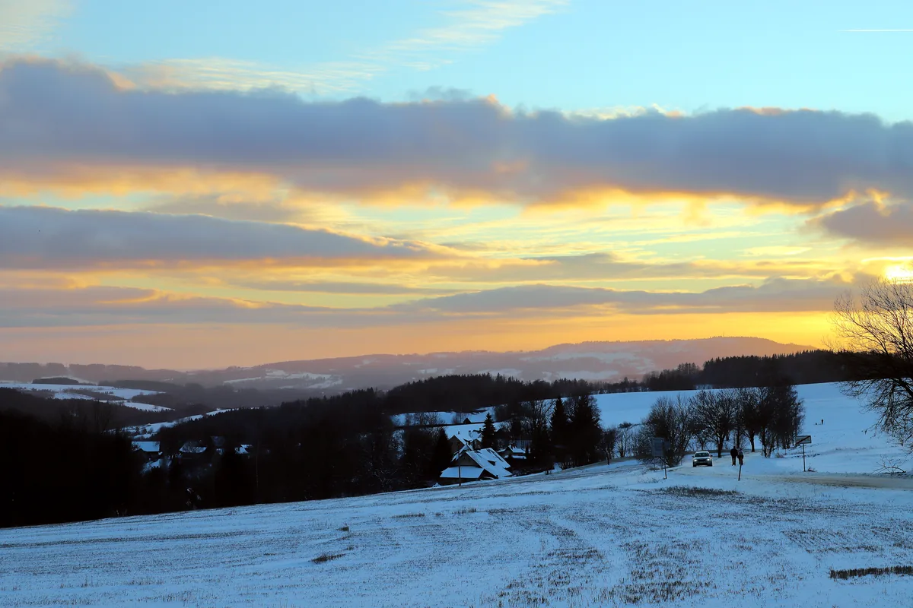
Dokončeno · poslední 3 apartmány
Apartmány Vysoké
Dva horské domy na kraji Vysokého nad Jizerou. Vlastní terasa, společná zahrada s přírodním jezírkem a Krkonoše na dohled.
01 Apartmány
Místo, kam se jezdí odpočívat. Dřevo, trámy a střešní okna, pod nimiž se spí jinak. V zimě běžky od dveří, v létě jezírko na zahradě.
2apartmánové domy
3poslední volné jednotky
193m²apartmán B2, 5+kk
700m n. m.Vysoké nad Jizerou
02 Volné jednotky
Poslednítři apartmány.
Ostatní jednotky už mají své majitele. Prodej posledních tří zajišťuje realitní kancelář Svoboda & Williams.
03 Galerie
Horyza oknem.
Fotografie z dokončených apartmánů a z okolí Vysokého nad Jizerou.
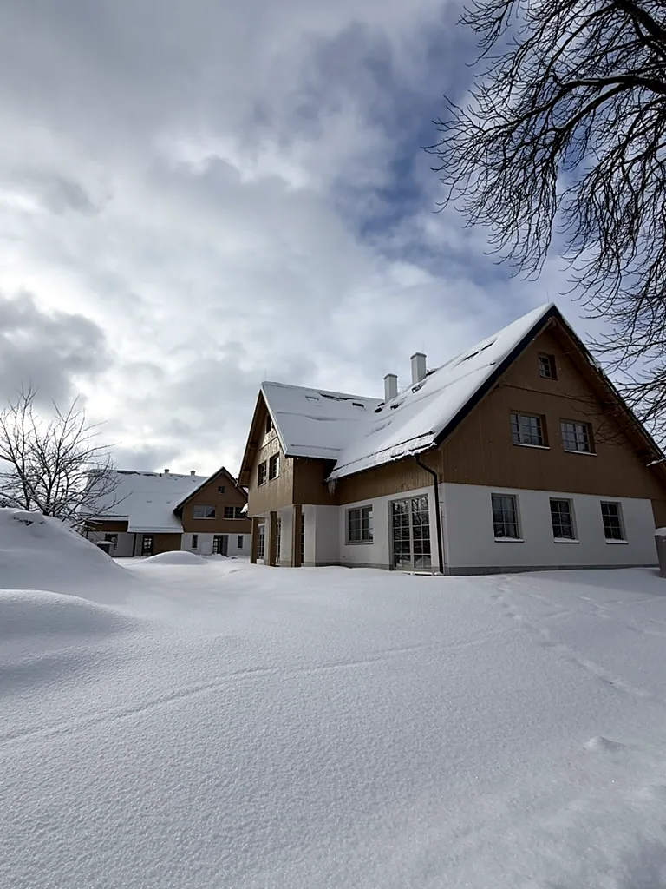
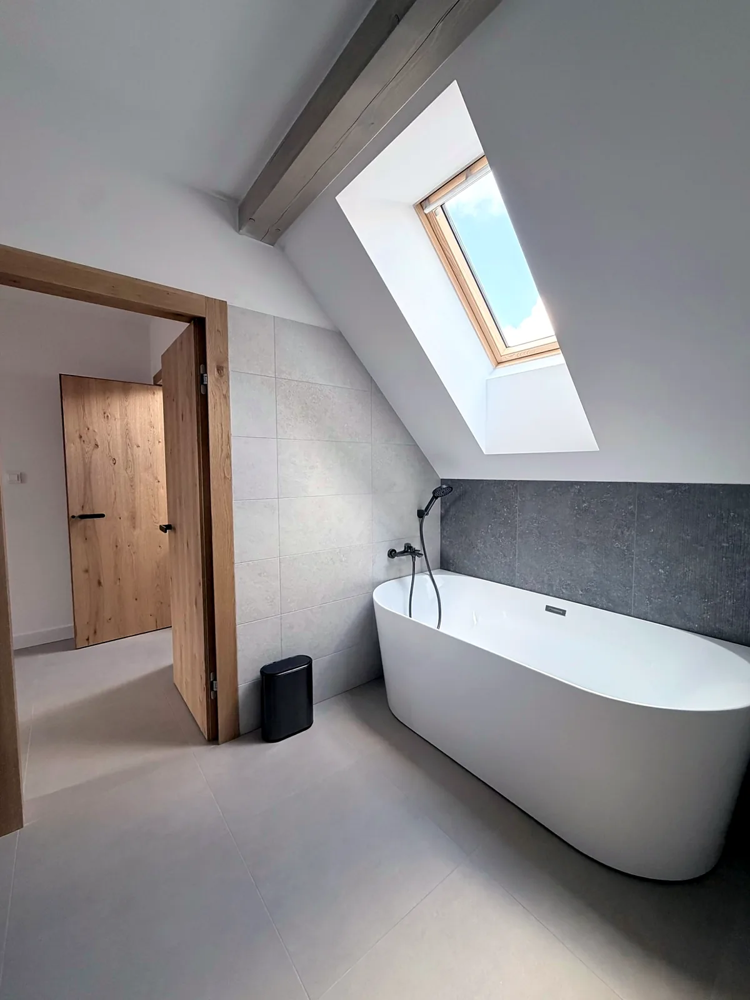
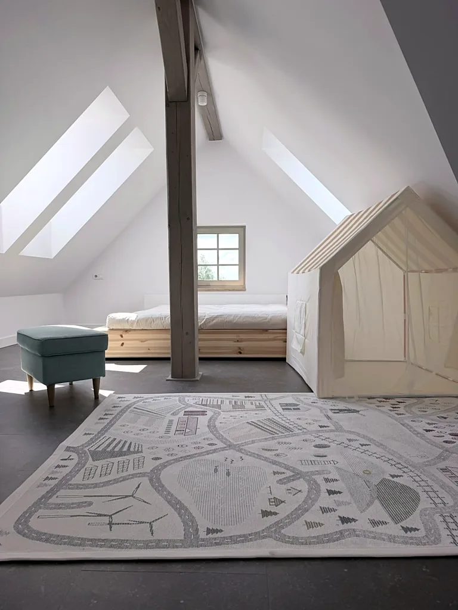
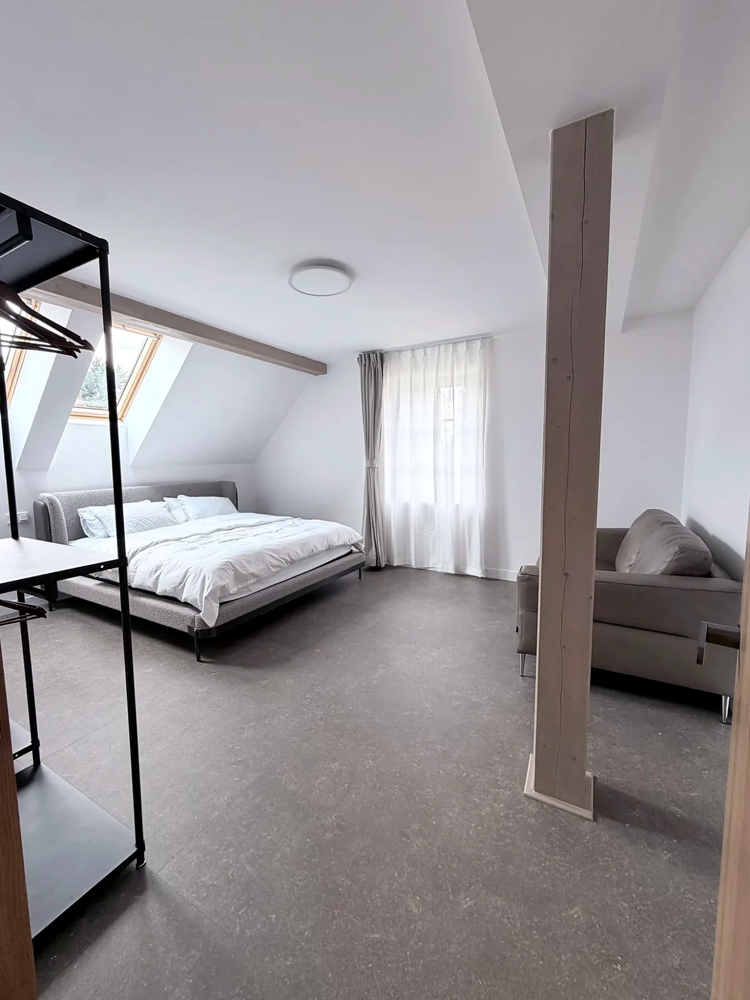
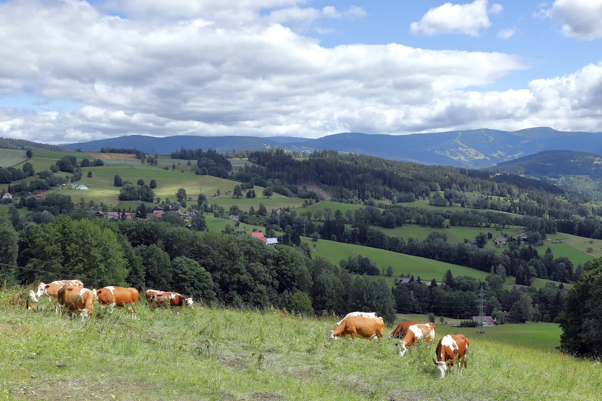
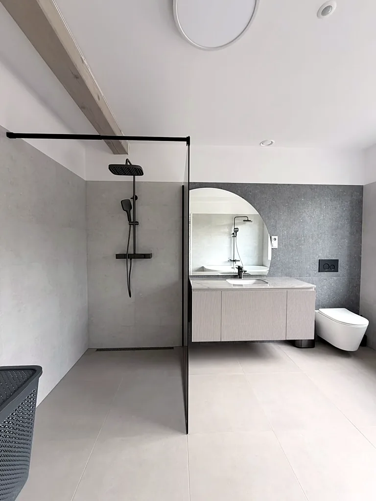
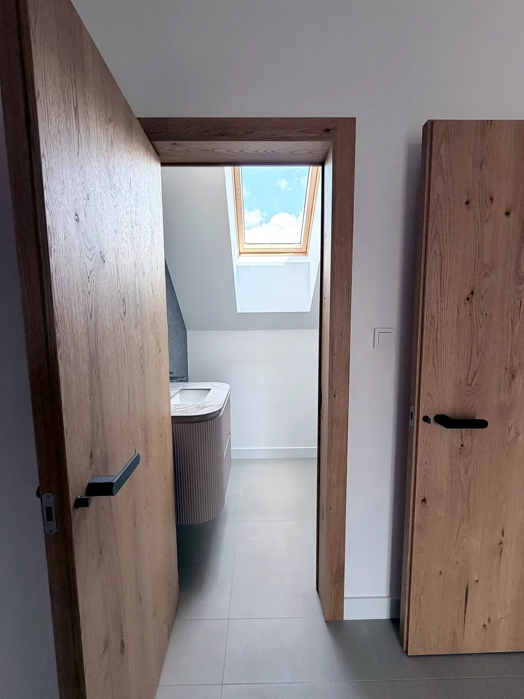
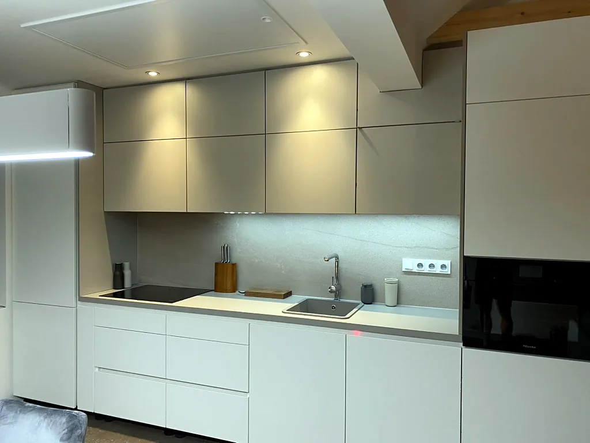
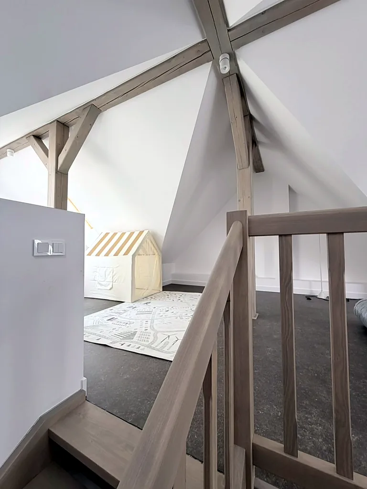
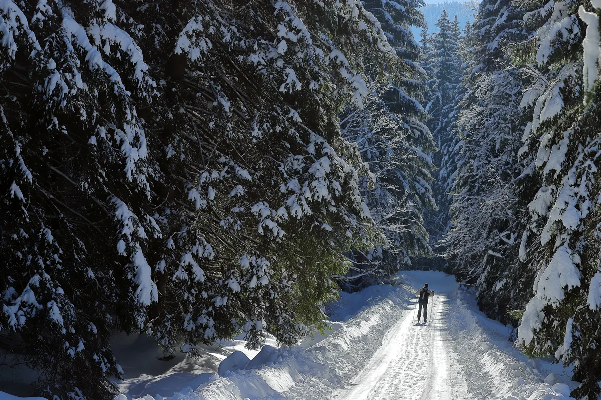
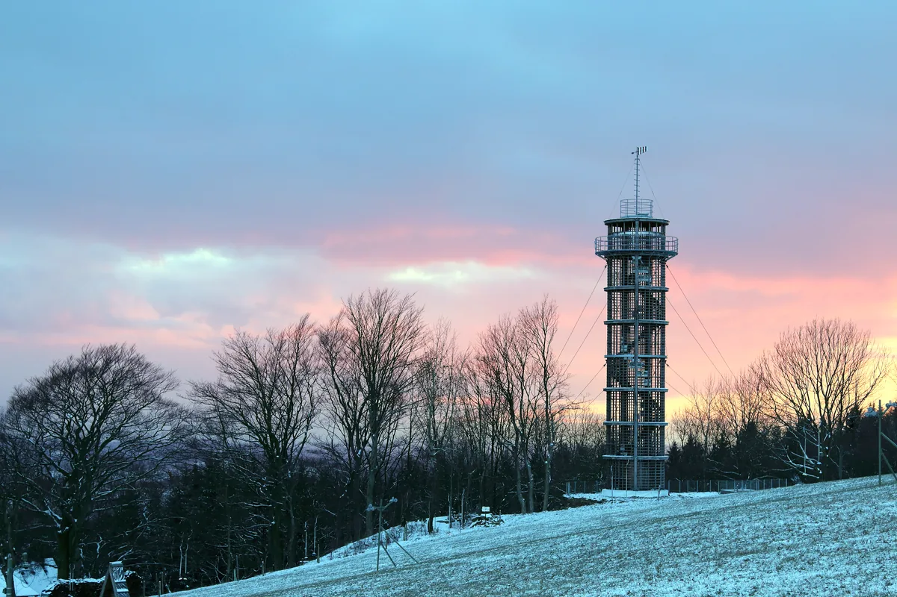
04 Lokalita
Vysokénad Jizerou.
Jedno z nejvýše položených měst v Česku na pomezí Krkonoš a Jizerských hor. Běžecké tratě, cyklotrasy, lyžařské vleky Šachty a Krakonošovo divadlo. Rokytnice a Harrachov za pár minut autem.
AdresaK. Havlíčka Borovského 442/443, 512 11 Vysoké nad Jizerou
Nadmořská výškacca 700 m n. m.
Zimaběžecké tratě, vleky Šachty, Rokytnice, Harrachov
Létocyklotrasy, turistika, jezírko na zahradě
Ve městěškola, nemocnice, pekárna, restaurace, divadlo